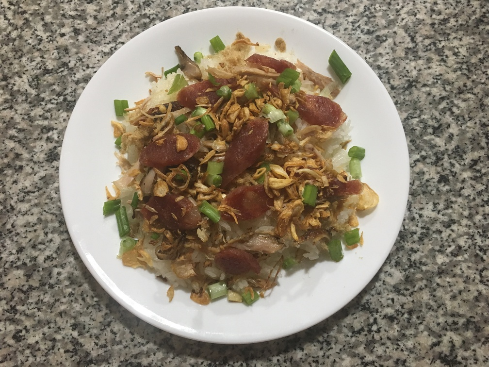

| Other | Meat | Veggie | Fruit |
|---|---|---|---|
| salt | chicken | garlic | |
| sweet rice | lap xuong (chinese pork sausages) | green onions | |
| yuk (pork floss) | hanh kho | ||
| shallot |
| instructions |
|---|
| Wash sweet rice and drain |
| Add hot water, just enough to cover rice, and cook in rice cooker |
| Mix sweet rice when it is rice |
| Stir fry chicken and shred into pieces |
| Boil lap xuong for 15 min and cut into slices |
| Stir fry minced shallots and garlic until slightly golden |
| Add minced green onions a few minutes before taking off heat |
| Plate sweet rice, layer with yuk, chicken, lap xuong, stir fried veggies, and hanh kho |